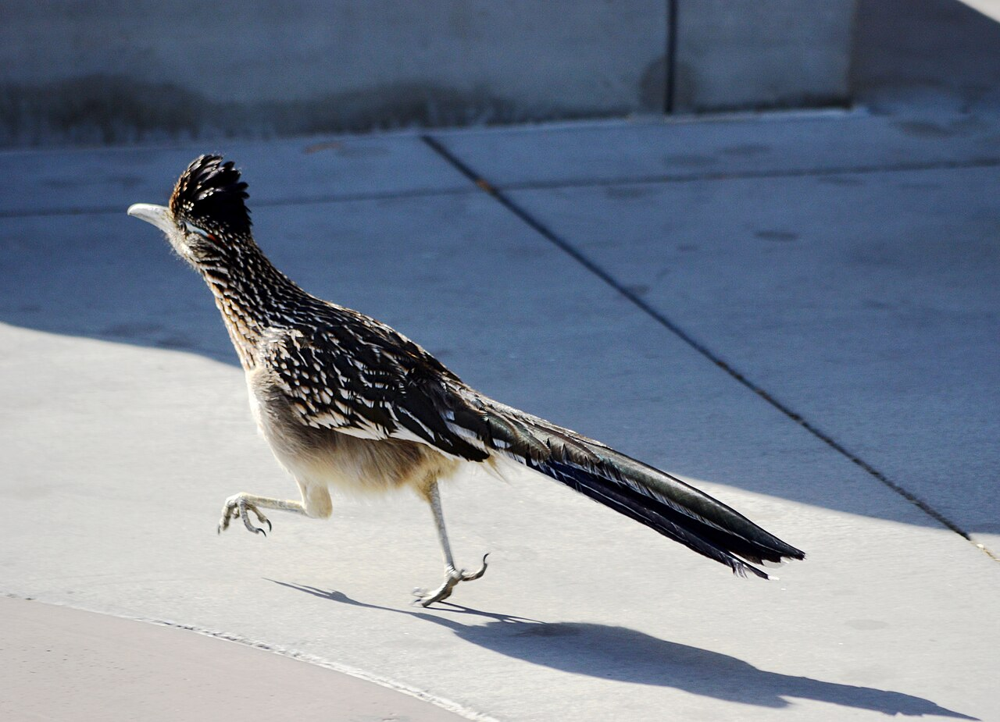
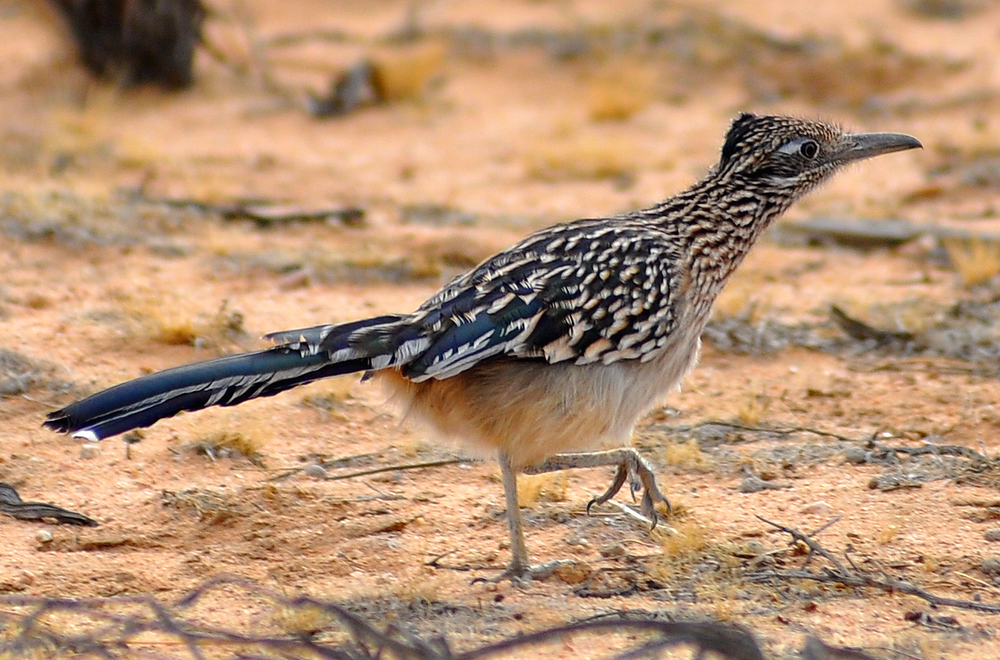
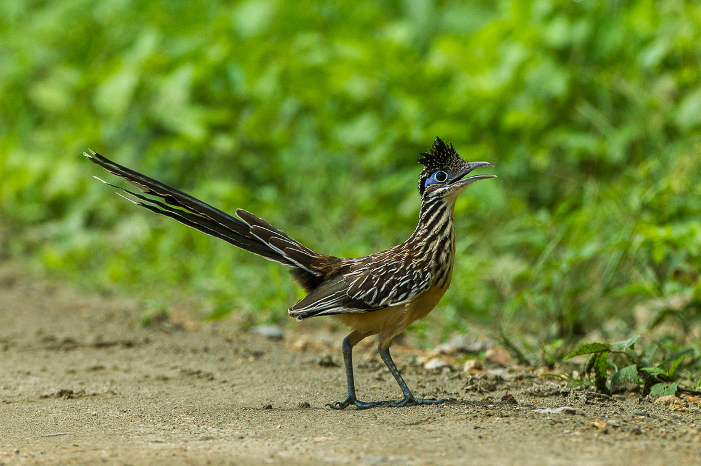
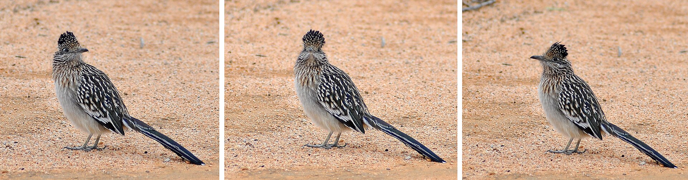
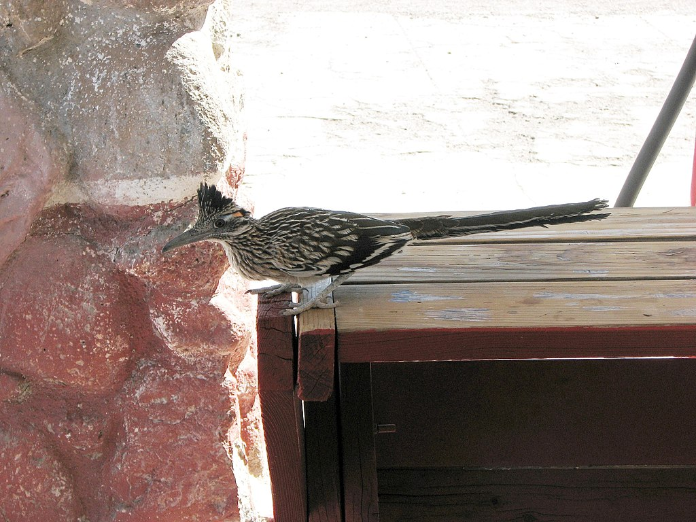
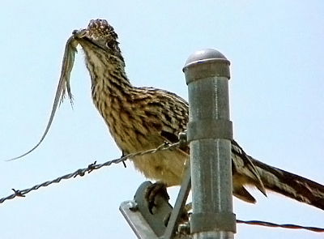

<!DOCTYPE html>
<html lang="en">

</html>

<head>
  <meta charset="UTF-8">
  <meta name="viewport" content="width=device-width, initial-scale=1.0">
  <link rel="stylesheet" href="style.css">
  <!-- Water Brush font -->
  <link rel="preconnect" href="https://fonts.googleapis.com">
  <link rel="preconnect" href="https://fonts.gstatic.com" crossorigin>
  <link href="https://fonts.googleapis.com/css2?family=Water+Brush&display=swap" rel="stylesheet">
  <!-- Montserrat font -->
  <link rel="preconnect" href="https://fonts.googleapis.com">
  <link rel="preconnect" href="https://fonts.gstatic.com" crossorigin>
  <link href="https://fonts.googleapis.com/css2?family=Montserrat:ital,wght@0,100..900;1,100..900&display=swap"
    rel="stylesheet">
  <title>Group 1 Exercise</title>
</head>

<body>
  <header>
    <marquee behavior="scroll" direction="left" scrollamount="50"></marquee>
    <h1>Roadrunners</h1>
  </header>

  <main>
    <h2>What's a roadrunner?</h2>
    <p>The roadrunners (genus Geococcyx), also known as chaparral birds or chaparral cocks, are two species of
      fast-running ground cuckoos with long tails and crests. They are found in the southwestern and south-central
      United States, Mexico and Central America, usually in the desert. Although capable of flight, roadrunners
      generally run away from predators. On the ground, some have been measured at 32 km/h (20 mph).</p>
    <marquee behavior="scroll" direction="right" scrollamount="30" class="fast">
      <em>ROADRUNNERS ARE FAST!!!!</em>
    </marquee>

    <h2>What types of roadrunners are there?</h2>
    <div class="pair">
      
      <marquee direction="down" width="500" height="250" behavior="alternate">
        <marquee behavior="alternate">Greater Roadrunner</marquee>
      </marquee>
    </div>
    <div class="pair">
      
      <marquee direction="down" width="400" height="300" behavior="alternate">
        <marquee behavior="alternate">Lesser Roadrunner</marquee>
      </marquee>
    </div>

    <div class="carousel">
      <div class="carousel-container">
        
        
        
        
        
        
      </div>
    </div>
  </main>

</body>